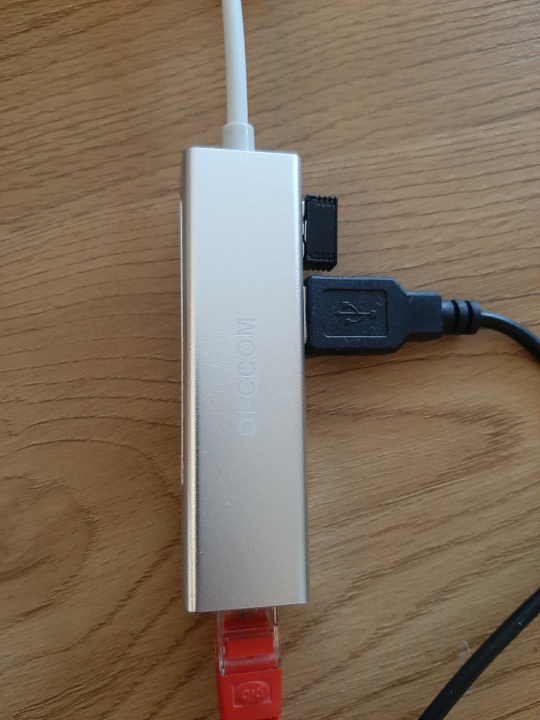

Одно дело, когда открываешь дома ноутбук (или тем более планшет), только чтобы посмотреть YouTube на диване, и совсем другое, когда нужно что-то периодически делать. Случаи могут быть разными: например, переходишь на удалённый график на работе или начинаешь делать какие-то свои проекты в качестве хобби. В любом случае, то, что раньше казалось удобным (тот же диван) начинает доставлять очень конкретные неприятные ощущения. Не говорю о столе и кресле, мой топ-5 вещей для удобства выглядит так:
- Укладка кабелей, здесь много всего
- Внешняя клавиатура и мышь
- Проводной интернет
- Подставка под ноутбук
- Внешний монитор
Пройдёмся подробнее, расскажу, до чего я дошёл на текущий момент.
Укладка кабелей
Меня эта тема вообще не беспокоила, но потом выложил фото своего рабочего места, и народ написал: надо что-то с этим делать. Посмотрел, действительно, выглядит ужасно. Порядок действий у меня был примерно такой:
- Надо определить место для розетки или сетевого фильтра, чтобы через кабель не нужно было перешагивать. У меня сетевой фильтр был на столе или в специальной нише под столом: и в том, и в другом случае выглядело ужасно. В итоге закрепил сетевой фильтр пластиковыми стяжками к ножке стола.
- Надо проложить провода, чтобы они шли, по возможности, вместе и не пересекались.
- Можно дополнить специальными девайсами: подвесными полками под стол, кабель-каналами, стяжками, прищепками и держателями, крючками для наушников.

В моём случае, поскольку в ноуте нет ethernet-порта, всё немного аккуратнее выглядит с USB-ethernet хабом, чем с USB хабом и ethernet-адаптером отдельно.

Внешняя клавиатура и мышь
Достаточно много основной работы я сделал на ноуте без них, то есть на клавиатуре ноута и с помощью тачпэда. Но когда печатаешь большие объёмы текста или используешь подставку под клавиатуру, о которой ниже, удобнее с внешней клавиатурой и мышкой. Клавиатуру предпочитаю механическую, о чём писал отдельно. Мне не очень нравится, когда клавиатура занимает много места на столе, поэтому у меня без цифрового блока, от чего не страдаю. Механические клавиатуры редко делают беспроводными, но тут уж провод приходится терпеть.
Мышь лучше взять полноразмерную, ну и коврик не помешает, иначе будет раздражать.
USB-хаб для клавиатуры и мышки можно отключить и взять ноут куда-то, это тоже удобно.
Проводной интернет
В характеристиках канала есть не только скорость, но и лаг – задержка сигнала. Вроде бы не критично, если пользуешься интернетом для чтения сайтов, просмотра видео и веб-приложений, а не для игр. С другой стороны, лаг может достигать секунды на страницу. Если перемножить на число страниц, которые просматриваешь, то времени становится жалко. Видео может грузиться с одинаковой скоростью, но вначале качество будет хуже. А вот веб-приложения с кабелем загружаются существенно быстрее.
Подставка под ноутбук
Есть целая история про эргономику: высота стола, стула, ровная спина, положение ног и т.п. Лично я сделал стул пониже, а вот подставка под ноут делает его экран выше, в связи с чем не нужно наклонять шею. У подставки есть ещё несколько плюсов:
- Её можно брать на диван, и ноут не будет жечь ноги;
- Сам ноут на подставке охлаждается лучше, чем на мягкой поверхности;
- Под ней можно проложить кабель питания ноута, если он идёт на другую сторону, и будет выглядеть чуть приличнее.
Внешний монитор
Тут сложность в чём: экраны современных ноутов поддерживают высокие разрешения, на которых всё становится слишком мелким. Можно увеличивать шрифт, но какой тогда смысл. У меня экран ноута 13", и я собираюсь поставить монитор 27" с таким же разрешением, чтобы можно было больше поместить на экран, и не нужно было всё время увеличивать масштаб.
Делитесь своими находками в части эргономики в комментариях, буду рад новым идеям.
Комментарии